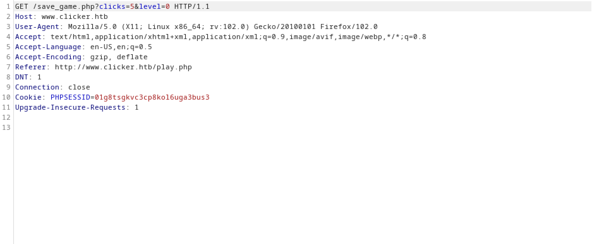

February 15, 2024
Newline Injection
In this tutorial, we will see how to perform a newline injection attack. The website offers a game that records the number of times you click on the page. However, the PHP function that saves the user score is vulnerable to newline injection attack.
This is the main page of the web application.
Let's register a new user.
Log in as the newly created user.
After logging in, the page provides three options: view the profile page, logout, and play the game.
The profile page shows the user score.
This is the game page. Clicking on the white circular area increases the number of clicks.
I clicked on the circular area five times, so the score shows 5. It gives us the option to save the game and then exit.
After exiting, it says that the game is saved.
The profile page shows the updated score.
This is the request that is passed to the web application when we save the game. It passes two parameters: clicks and level.
The PHP code for the site includes a check to see if the user is trying to set the 'role' parameter.

This is the function that takes the parameters and their values from the URL.
After passing the values for 'clicks' and 'level', this is how the update statement is supposed to look like.
We can add a new parameter called 'role' and set its value to 'Admin'. Note that after 'role', we are adding the newline character '%0a' and then we are assigning 'Admin' to it.
After adding the newline character, this is how the new update statement looks like. And since SQL allows whitespace and it is a recommended best practice to use whitespace to increase readability, the check "strtolower($key) === 'role'" won't return true.
Now that we have logged in with the 'Admin' role, we get a new link to 'Administration'.
The 'Administration' page shows a list of all the top players.

If you liked reading this article, you can follow me on Twitter: mujtabareads.
- Bypass PHP URL Filtering to Perform LFI Attack
- EAR (Execute After Redirect) Vulnerability
- Time-Based SQL Injection - Example 01
- Mass Assignment Vulnerability
- Remote Command Execution in Artica Pandora FMS 744 (CVE-2020-13851)
- Perform Directory Traversal by Bypassing Filters
- SQL Injection Vulnerability in Artica Pandora FMS 742 (CVE-2021-32099) - Example 02
- SQL Injection Vulnerability in Artica Pandora FMS 742 (CVE-2021-32099) - Example 01
- AS-REP Roast Attach (Kerberoasting)
- Reset Password Using PowerView PowerShell Script